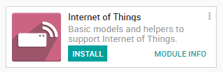
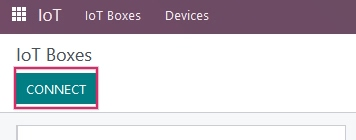
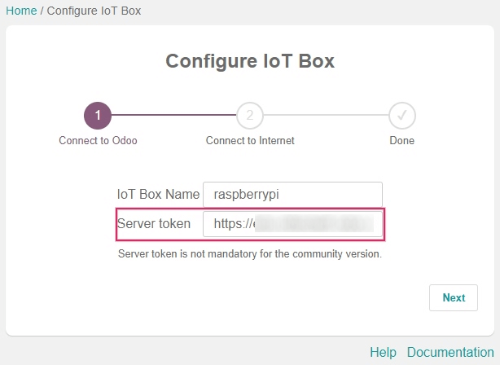
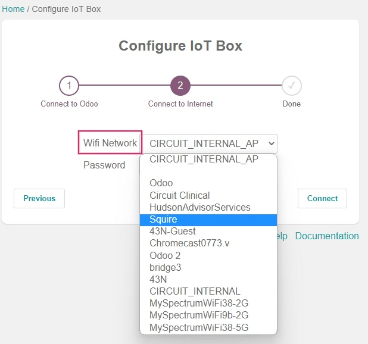

Connect an IoT box to Odoo¶
An Internet of Things (IoT) box is a micro-computer device that allows for the connection of input and output devices to an Odoo database. An IoT box subscription is required in order to use the IoT box with a secured connection. A computer is also required to set up the IoT box.
See also
Begin the IoT configuration process by installing the IoT app on the Odoo database through the application.
Next, after the IoT app is installed, navigate to , and then click on the Connect button located in the upper-left corner of the dashboard.
There are two recommended ways to connect the IoT box to the database once the IoT app is installed. Follow the steps in either of the next two sections to connect the IoT box via wired ethernet connection or via WiFi.

Important
The disk image that the IoT box SD card is formatted with is unique to the version of the Odoo database that the IoT box is running on. Ensure that the IoT box is flashed with the most up-to-date disk image.
Ethernet connection¶
The following is the process to connect the IoT box via an ethernet cable to the Odoo database (by way of the ethernet port; RJ-45).
First, connect all wired devices to the IoT box (ethernet, USB devices, etc.). At minimum, an HDMI screen should be connected. Then, plug the IoT box into a power source.
Immediately after the unit powers on and boots up, read the pairing code from the screen or from the printout of a receipt printer connected to the IoT box.
Warning
By default, the IoT box will display the pairing code for a maximum of 5 minutes after the unit boots up. After 5 minutes, the pairing code will disappear for security purposes and the IoT box will need to be rebooted manually by unplugging the unit from the power source for ten seconds and re-plugging it back in.
Note
If no screen is attached to the IoT box, then the pairing code can be accessed from the IoT box homepage by clicking on the POS Display button. For instructions on how to access the IoT box homepage visit Manually connecting the IoT box using the token.
On the computer, navigate to , and then click on the Connect button located in the upper-left corner of the the dashboard. Input the pairing code in the Pairing Code field and click on the Pair button. The database will now link to the IoT box and it will appear on the page.
WiFi connection¶
The following is the process to connect the IoT box via a WiFi connection to the Odoo database.
First, ensure there is no ethernet cable plugged into the IoT box. Then, connect all wired devices to the IoT box (USB devices, etc.).
After connecting the devices, plug the IoT box into to a power source. On the computer, navigate to , and then click on the Connect button located in the upper-left corner of the the dashboard. Then copy the Token from the WiFi connection section as this will later be used to link the Odoo database to the IoT box.
Back on the computer, navigate to the available WiFi networks and connect to the IoT box WiFi network. The WiFi network dispersed by the IoT box will start with IoTBox-xxxxxxxxxx.
Upon connecting to the IoT box WiFi, a browser will automatically redirect to the wizard. Name the IoT box, then paste the previously copied token into the Server Token field, and then click on Next.
Note
If the IoT box WiFi connection wizard doesn’t start, then see the documentation on connecting with a token.
Now, choose the WiFi network that the IoT box will connect with (enter the password if there is one) and click on Connect. Wait a few seconds and the browser will redirect to the IoT box homepage. The computer may need to be manually re-connected back to the original WiFi connection, if this does not happen automatically.
After completing each step, the IoT box should appear when navigating to on the Odoo database.

Important
The IoT box may need to be manually rebooted upon successfully connecting via WiFi for the box to appear in the IoT app on the Odoo database. To do so, simply unplug the device and plug it back into the power source after ten seconds.
Manually connecting the IoT box using the token¶
A manual connection of the IoT box to the IoT app can be made using the token, from a computer. The token can be found by navigating to and clicking on Connect.
Under the WiFi Connection section of the Connect an IoT Box page that appears, click Copy to the right of the Token. This token will be entered into the IoT box homepage.
Access the IoT box homepage by entering the IP address of the IoT box into a browser window from a computer on the same network as the IoT box (preferably by ethernet connection).
Note
The IP address can be accessed by the router admin console that the IoT box is connected to, or by connecting a receipt printer to the IoT box. A receipt will print out with the IoT box’s IP address on it.
On the IoT box homepage, enter the token under the Server section by clicking on Configure. Then, paste the token into the Server Token field and click Connect. The IoT box will then link to the Odoo database.
IoT box schema¶
Raspberry Pi 4¶
The Odoo IoT box (Raspberry Pi 4) schema with labels.¶
Raspberry Pi 3¶
The Odoo IoT box (Raspberry Pi 3) schema with labels.¶